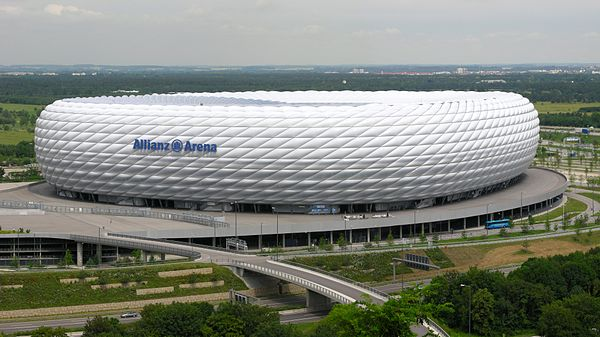

Bayern je svoje prve treninge imao na Schyrenplatzu, u ulici Schyrenstraße u centru Münchena. Prve službene utakmice igrao je na Theresienwieseu. Godine 1901. Bayern se premjestio na svoje igralište, koje se nalazilo na Schwabingu u ulici Clemensstraße. Nakon pridruživanja Münchner Sport-Clubu (MSC-u) 1906., Bayern se u svibnju 1907. premjestio na MSC-ovo igralište u ulici Leopoldstraße. Kako se broj Bayernovih navijača počeo uvećavati 1920-ih, Bayern se selio po raznim minhenskim stadionima. Od 1925. godine, Bayern je počeo dijeliti Grünwalder Stadion sa 1860 Münchenom. Do Drugog svjetskog rata, stadion je bio u vlasništvu 1860 Münchena, pa je i danas zvan Sechz'ger Stadion ("stadion Sechzigera"). Tijekom rata je uništen, no napornim je radom nakon rata obnovljen. Bayernova rekordna posjećenost na Grünwalder Stadionu bila je sezone 1961./62. u utakmici protiv 1. FC Nürnberga, kada je bilo nazočno oko 50.000 gledatelja. Od početka Bundeslige, stadion je imao maksimalni kapacitet od 44.000 koji je popunjen nekoliko puta, ali je kapacitet kasnije smanjen na samo 21.272 sjedala. Danas, stadion koriste rezervne momčadi Bayerna i 1860 Münchena.
Allianz arena - Bayernov trenutni stadion